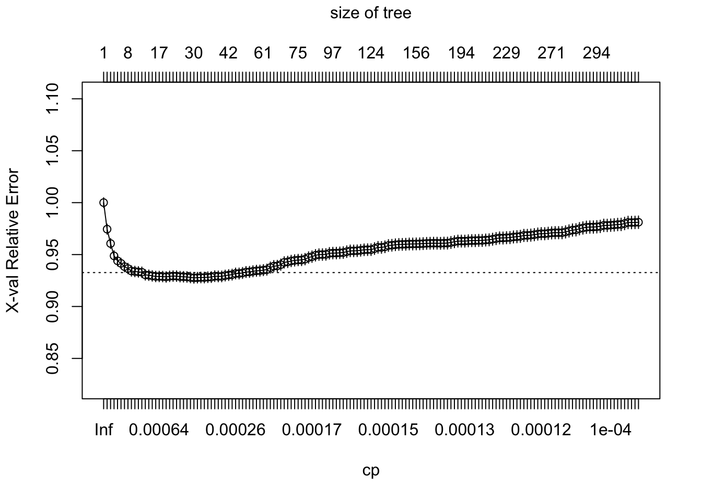

Decision Trees - CART
Angelo Muñoz y Andrés Fernández Vergara
En este Data Tutorial estudiaremos el uso de árboles de decisión para problemas de regresión y clasificación. Sigue las instrucciones entregadas y replica el código que estimes relevante para seguir la actividad en tu propio computador. Al terminar la actividad, debes visitar el enlace de Lecturas.
1. Árboles de decisión
Los datos provienen del artículo “Social Pressure and Voter Turnout: Evidence from a Large-Scale Field Experiment” de Gerber, Green y Larimer (2008) (Ver el artículo). El artículo trata sobre un estudio de campo en el que los votantes registrados en los EE. UU. fueron seleccionados al azar y recibieron cartas motivándolos a votar. Como el papel electoral en Estados Unidos es público y se puede consultar quién votó, los investigadores pudieron analizar el efecto de las cartas en la participación de los votantes. Los datos contienen variables relativas al tratamiento (\(W\)), respuesta (\(Y\)) y características observables de los votantes (\(X\)).
En la base, mostrada a continuación, \(Y\) es la variable de resultado (votar o no votar) en la elección general del año 2004, \(W\) es la variable de tratamiento (carta recibida) y el resto de las variables son covariables \(X\), principalmente sobre el comportamiento de voto en elecciones anteriores.
A continuación vemos una vista previa de la base de datos:
| …1 | X1 | id | cluster | hh_id | hh_size | Y | W | sex | yob | g2000 | g2002 | p2000 |
|---|---|---|---|---|---|---|---|---|---|---|---|---|
| 207512 | 207512 | 207512 | 6036 | 108633 | 2 | 0 | 0 | 1 | 1986 | 0 | 0 | 0 |
| 98909 | 98909 | 98909 | 2848 | 51252 | 1 | 0 | 0 | 0 | 1961 | 1 | 1 | 0 |
| 195936 | 195936 | 195936 | 5688 | 102384 | 1 | 1 | 0 | 1 | 1951 | 1 | 0 | 0 |
| 327755 | 327755 | 327755 | 9501 | 171008 | 1 | 1 | 1 | 0 | 1950 | 1 | 1 | 1 |
| 62368 | 62368 | 62368 | 1798 | 32358 | 2 | 1 | 1 | 0 | 1963 | 1 | 1 | 0 |
| Variable | Descripción |
|---|---|
| id | Identificador Votante |
| Y | Si vota (1) o no (0) en elección general 2004 |
| W | Si recibe carta (1) o no (0) antes de votación general de 2004 |
| sex | Sexo del votante: Mujer (1) y Hombre (0) |
| yob | Año de nacimiento del votante |
| g2000 | Si votó en las elecciones generales de 2000 (1) o no (0) |
| g2002 | Si votó en las elecciones generales de 2002 (1) o no (0) |
| p2000 | Si votó en las elecciones primarias de 2000 (1) o no (0) |
| p2002 | Si votó en las elecciones primarias de 2002 (1) o no (0) |
| p2004 | Si votó en las elecciones primarias de 2004 (1) o no (0) |
| p2004_mean | Porcentaje de votación en su estado para la elección primaria 2004 |
Para fines de modelar el comportamiento de votación, se divide la base de datos en un 70% para el ajuste de un árbol de decisión y un 30% para la predicción de un árbol de decisión.
# División de los datos: entrenamiento con 70%
my_data_train = my_data %>% sample_frac(0.70)
# División de los datos: test, separando de la muestra completa lo que no es entrenamiento.
my_data_test = anti_join(my_data, my_data_train, by = 'id')No hay un valor predeterminado para escoger en cuanto a la separación de la muestra. Puede utilizarse una separación de 50/50 como una de 99/1, sin embargo, se debe tener en cuenta de que a mayor muestra de entrenamiento existe mayor riesgo de sobreajustar el modelo, y a menor muestra de entrenamiento comienza a ocurrir un riesgo de subajuste del modelo.
\[\\[1in]\]
2. Estimación
La metodología de árboles de decisión está implementada en el paquete rpart del programa R. La función principal es rpart( ) y habitualmente se emplea de la siguiente forma:
rpart(formula=, data=, method=, control=, ...)Donde:
formula: recibe como input una fórmula en R, del estilo
Y ~ X1 + X2, y permite especificar el modelo. En R se puede utilizar la fórmulaY ~ .donde el punto representa todas las covariables de la base de datos.data: recibe como input el conjunto de datos donde se aplicará el modelo. Debe tenerse en cuenta que para entrenar, la muestra debe ser la de entrenamiento, y para predecir, debe usarse la muestra de evaluación.
method: método empleado para realizar las particiones del árbol, puede ser “anova” (regresión), “class” (clasificación) u otras. El método a escoger dependerá de la naturaleza de las variables del modelo.
control: lista de opciones que controlan el algoritmo de partición como método de detención (stopping). Esta función permite poner un límite de observaciones en cada una de las hojas finales (minbucket) o en los nodos intermedios (minsplit). Al mismo tiempo, es esta función la que permite incorporar funciones de costo de complejidad de poda. Para usarlo, se puede imputar en la llamada de función principal o utilizando la función rpart.control( ). Por ejemplo:
rpart.control(cp = , minsplit = , minbucket = , ...)\(cp\) es el parámetro de costo de complejidad (\(\alpha\)) que permite buscar el subárbol óptimo según el número de hojas. El parámetro de penalización se mueve en un rango entre 0 (un árbol con profundidad máxima) y 1 (un árbol sólo con raíz).
\(minsplit\) y \(minbucket\) son los parámetros para fijar números mínimos de observaciones en nodos intermedios y terminales, respectivamente.
A continuación, usted podrá implementar un árbol de decisión, considerando todas las covariables para explicar \(Y\). Comience fijando el parámetro \(minbucket\) en 10 y \(cp\) en \(0.001\). ¿Qué ocurre con la gráfica del árbol cuando varía el valor del ponderador de penalización.?
En el árbol, en la parte superior de cada nodo, se presenta la respuesta media de \(Y\) (porcentaje de votación) del nodo y, en la parte inferior de cada nodo, se presenta el porcentaje de muestra en el nodo. Sobre el gráfico se presenta el \(MSE\) del árbol completo. Recuerda que este indicador tiene la forma \(MSE = \sum^N_i (y_i - \hat(y)_i)^2\). Es decir, un promedio de cuánto se equivocan las predicciones de cada dato, en la muestra de evaluación o de entrenamiento.
set.seed(12345)
tree <- rpart(Y ~ sex+yob+g2000+g2002+p2000+p2002+p2004+p2004_mean, data = my_data_train,
control = rpart.control(minbucket = 10,
cp = 0.001))
pr.tree <- predict(tree, type = "matrix", newdata = my_data_test)
MSE <- as.data.frame(mse(my_data_test$Y, pr.tree))
colnames(MSE) <- c("MSE")
MSE <- sprintf("%5.4f", MSE)
MSE## [1] "0.2015"rpart.plot(tree, main="Árbol de decisión: Social Pressure and Voter Turnout",box.palette="RdBu", shadow.col="gray", nn=TRUE, branch.lty = 3)
\[\\[1in]\]
3. Buscando el número óptimo de hojas
Al variar el ponderador de costo de complejidad, varía el largo del árbol. Para cada valor de costo \(cp\) se genera un árbol, y por lo tanto, se puede estimar la efectividad de cada árbol de predicción de acuerdo al indicador \(cp\). Esta efectividad puede medirse a partir del valor de la \(K-fold Cross Validation\). Esto consiste en tomar \(K\) divisiones y entrenar el modelo con todos menos el \(K\)-ésimo grupo; en cambio, el grupo número \(K\) se utiliza para evaluar el modelo. Luego se promedian los \(K\) valores de \(MSE\) evaluados para obtener un valor del proceso.
Lo que haremos entonces será graficar el valor de \(K-fold CV\) de evaluación para cada uno de los árboles generados por los valores de \(cp\) y su número de nodos. ¿Qué ocurrirá si aumenta el valor de \(K\)?
tree <- rpart(Y ~ sex+yob+g2000+g2002+p2000+p2002+p2004+p2004_mean, data = my_data_train,
control = rpart.control(xval = 5,
minbucket = 10,
cp = 0.0001
))
p <- plotcp(tree)
#B <- printcp(tree)
A <- as.data.frame(B)
C <- cbind(as.numeric(A[A$xerror == min(B[,4]), 1]), as.numeric(A[A$xerror == min(B[,4]), 2]))
colnames(C) <- c("CP", "Núm de hojas")
C[1,1] <- sprintf("%5.4f", C[1,1])
C## CP Núm de hojas
## [1,] "0.0003" "32"El gráfico presenta el valor de la validación cruzada \(K-fold Cross-Validation\), que puede leerse como una aproximación del MSE de evaluación. Por lo tanto, debe utilizarse el número de hojas que minimice el valor de la evaluación. \[\\[1in]\]
4. Quedarse con el árbol podado
Ahora que hemos seleccionado el número óptimo de hojas, lo que resta es armar el subárbol hasta ese valor de hojas, estimar las predicciones y calcular el valor de MSE. Esto se puede hacer mediante la función \(prune.rpart\) en R.
tree <- rpart(Y ~ sex+yob+g2000+g2002+p2000+p2002+p2004+p2004_mean, data = my_data_train,
control = rpart.control(minbucket = 10,
cp = 0.004))
pruned <- prune.rpart(tree, cp = 0.004)
prpruned <- rpart.predict(pruned, data = my_data_test)
rpart.plot(pruned, main="Árbol de decisión PODADO: *Social Pressure and Voter Turnout*",box.palette="RdBu", shadow.col="gray", nn=TRUE, branch.lty = 3)
my_data_train = my_data %>% sample_frac(0.7)
my_data_test = anti_join(my_data, my_data_train, by = 'id')
tree <- rpart(Y ~ sex+yob+g2000+g2002+p2000+p2002+p2004+p2004_mean, data = my_data_train,
control = rpart.control(minbucket = 10,
cp = 0.004))
pruned <- prune.rpart(tree, cp = 0.004)
rpart.plot(pruned, main="Árbol de decisión PODADO: *Social Pressure and Voter Turnout*",box.palette="RdBu", shadow.col="gray", nn=TRUE, branch.lty = 3)prpruned <- predict(pruned, type = "matrix", newdata = my_data_test)
MSEf <- as.data.frame(mse(my_data_test$Y, prpruned))
colnames(MSEf) <- c("MSE")
MSEf <- sprintf("%5.4f", MSEf)
MSEf## [1] "0.2064"\[\\[1in]\]
Preguntas
¿Mejoró el MSE entre los primeros árboles estimados y los podados?
¿Disminuye la longitud del árbol al aumentar la penalización de complejidad?
¿Qué tan sensibles son los árboles de decisión a cambios en la muestra de entrenamiento?
¿El método de \(K\) validaciones cruzadas permite aproximarse al error \(MSE\) de evaluación?
¿Los árboles de decisiones sólo sirven para problemas de clasificación binaria?